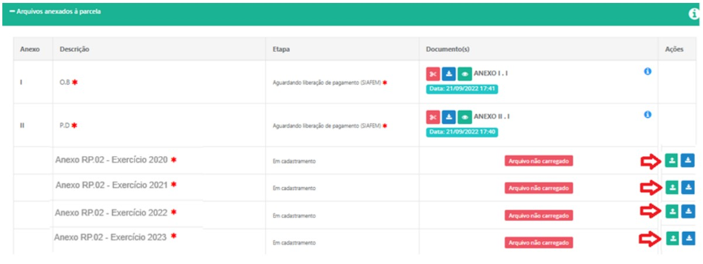
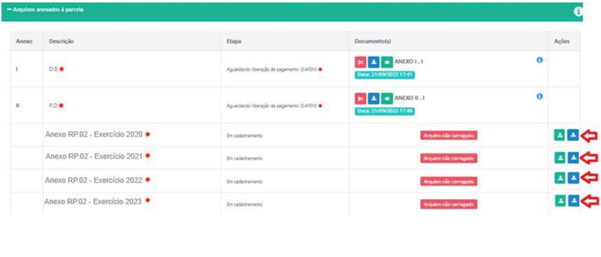

Nos termos do artigo 122 das Instruções n.º 01/2020 do TCESP, necessário se faz a elaboração de um RP-02 para cada exercício de vigência do Termo de Convenio firmado. Para os casos em que o exercício referido na aba não tiver convênio firmado, deverá ser preenchido com o "não se aplica". Para os casos em que já existia o convênio no exercício referenciado na aba, mas que não houve repasse financeiro, o RP-02 deverá ser preenchido com números zerados. O RP-02 trata-se de formulário em que se demonstram as receitas e despesas ocorridas por exercício de vigência do termo, devendo ser firmado pelo contador e acompanhado do competente CRC.
Os procedimentos a seguir são para as Demandas da SGRI - Secretaria de Governo e Relações institucionais. As outras secretarias tem sua própria dinâmica.
Lembrando que para os EXERCÍCIOS ANTERIORES à assinatura do convênio, onde não houve repasse, no corpo do RP-02, logo após os dizeres (REDAÇÃO DADA PELA RESOLUÇÃO Nº 11/2021), incluir a frase: NÃO SE APLICA - CONVÊNIO ASSINADO EM 20xx e Em ....... IMPORTÂNCIA TOTAL DE R$ 0,00 (nenhum recurso recebido, para este Convênio, neste período).
Passo 1 - Baixe o modelo para preenchimento na plataforma, de cada exercício para preenchimento. OBS - O mesmo deverá ser assinado pelo CONTADOR responsável. O preenchimento deverá ser realizado exatamente como no modelo disponível para download, onde NÃO SERÁ NECESSÁRIO PAPEL TIMBRADO DO MUNICÍPIO.
Passo 2 - após preenchimento de cada documento e devidamente assinado, salve-os como PDF para realizar o upload na plataforma.
Passo 3 - com os uploads devidamente efetuados, realize a tramitação da Demanda. OBSERVAÇÃO: SEGUE O MODELO PARA AUXILIAR NO PREENCHIMENTO ENVIAR SOMENTE O FORMULÁRIO COM AS INFORMAÇÕES PERTINENTES AO DEMONSTRATIVO (não enviar página com instruções)